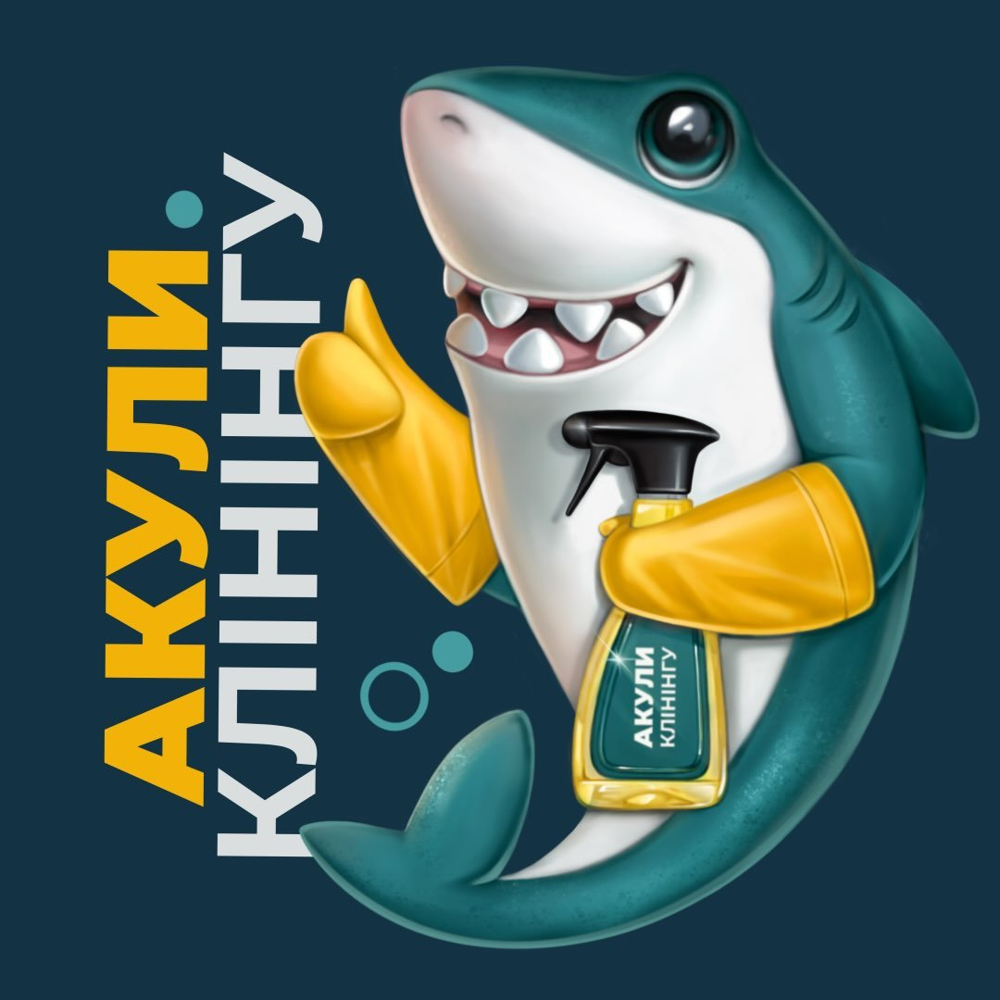

Для оселі
Генеральне
прибирання
Коли хочеться приділити увагу всьому дому, а не лише видимим поверхням.

АКУЛИКЛІНІНГУ067 414 27 77Замовити прибиранняВінниця та передмістя
Генеральне, післяремонтне та регулярне прибирання. Дбаємо про ваш простір — ви займаєтеся своїм.
Отримати прорахунокМи — «Акули клінінгу», команда з Вінниці. Прибираємо квартири, будинки й комерційні приміщення. Для нас важливі не лише чисті поверхні, а й повага до простору та людей.
Познайомитися в InstagramНавчені клінери, уважні до деталей.
Техніка та засоби для різних завдань.
Погоджуємо обсяг робіт до прибирання.
Коли хочеться приділити увагу всьому дому, а не лише видимим поверхням.
Підготуємо простір до життя після завершення будівельних робіт.
Знайома команда та чистота за графіком. Для клієнтів на постійному обслуговуванні.
Офіси, кав’ярні та інші простори, де чистота — частина враження про ваш бізнес.
Для квартир, будинків і комерційних приміщень. Деталі доступу обговоримо заздалегідь.
Дивани, крісла та інші м’які меблі. Для прорахунку знадобляться фото й розміри.
Оберіть послугу та розкажіть про приміщення. Ми підготуємо звернення для менеджера.
Вартість залежить від площі, стану поверхонь і переліку робіт. Менеджер уточнить деталі та погодить суму до замовлення.
Або просто зателефонуйте нам.
Послуга, площа та кілька фото допоможуть зрозуміти завдання.
Погодимо перелік робіт, вартість і зручну дату.
Команда подбає про прибирання вашого приміщення.
До дому, роботи й планів, для яких тепер є час.
Вартість розраховуємо за вашим завданням: враховуємо площу, стан приміщення та додаткові роботи. Надішліть деталі й фото — менеджер підготує прорахунок.
Підтримуюче прибирання виконуємо на постійній основі. Для разового замовлення можна обговорити генеральне або інший потрібний вам вид прибирання.
Працюємо у Вінниці та передмісті. Напишіть населений пункт — уточнимо можливість виїзду й умови.
Надішліть фото меблів, орієнтовні розміри та коротко опишіть забруднення. Це допоможе погодити обсяг робіт і вартість.